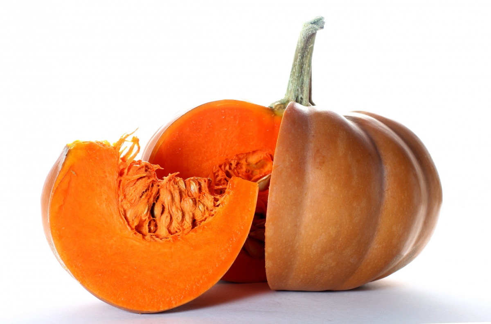

Однолетнее, двулетнее или многолетнее травянистое растение; вид рода Свёкла семейства Амарантовые. Культивируется на больших площадях повсеместно.

Двулетнее растение, сельскохозяйственная культура; вид рода Капуста семейства Капустные (Крестоцветные).

Двулетнее растение, овощная культура, подвид вида морковь дикая. Обычно в быту под словом «морковь» подразумевается широко распространенный корнеплод именно этого растения, который обычно относят к овощам.
Однолетнее травянистое культурное растение, единственный культурный представитель рода Кукуруза семейства Злаки. Помимо культурной кукурузы, род Кукуруза включает четыре вида

Однолетнее травянистое растение, вид рода Огурец семейства Тыквенные, овощная культура.

Вид многолетних травянистых растений рода Паслён. Возделывается как однолетнее растение.

Растение семейства Тыквенные, вид рода Огурец, бахчевая культура. Родиной дыни считается Средняя Азия и Малая Азия.

Многолетнее травянистое растение, вид рода Лук семейства Луковые, широко распространённая овощная культура.

Одно-двухлетнее растение из семейства зонтичных высотой 50-80 см. Корень мясистый, стержневой, цилиндрический.

Вид многолетних клубненосных травянистых растений из рода Паслён семейства Паслёновые. Клубни картофеля являются важным пищевым продуктом.

Род травянистых растений семейства Тыквенные. Под словом «тыква» в России обычно понимаются виды Тыква обыкновенная и Тыква гигантская

Кустовая разновидность тыквы обыкновенной с продолговатыми плодами, без плетей. Плоды могут быть зелёного, жёлтого, чёрного или белого цвета. Мякоть нежная и быстроваркая.

Вид однолетних травянистых растений рода Capsicum семейства Паслёновые, а также его плоды. Сельскохозяйственная овощная культура.